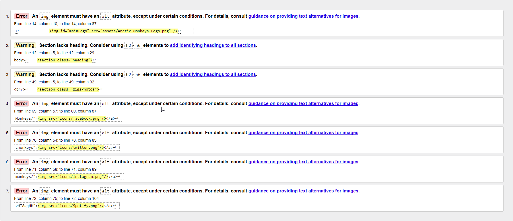

When designing and building my website, I thought it would be important to consider the technologies I was using in the process. This meant looking at the advantages and disadvantages of using newer technologies over old ones, and whether that would benefit me or hinder me in the process of making the website.
For this, I considered new technologies such as HTML5 over the older versions of the HTML standard. Within HTML5, certain tags and functionality were added to allow for the coder to make sure sections and elements within the website were easily identifiable. This meant tags such as the “section” or “nav” tags were available to use for me should I wish to use them. I did use these 2 specific tags as they allowed me to easily identify the parts of the page which I wanted to do things with. For example, the “nav” tag which I used was there for the navigation bar along the top of every page in the website, meaning it was very important to know exactly what this was and have the added functionality that the tag offers. The other tag which I commonly used when coding the website “section” tag, which allowed me to easily identify where the different sections of each webpage began and ended. This allowed me to very easily split the pages into sections and manage the content within those sections.
Both element tags have advantages over the old standard used, which was the “div” tag. This is because the two tags incorporated in the new HTML5 standard allow for the designer/coder, me in this case, to easily identify different sections and elements within the webpage just by looking at the tag used, without having to look at the class or id of a div element, or even the content, to work out exactly what the element is. This added usability made it much easier to code the website and go and solve problems that arose in the process as it made it much easier to identify the sections or elements within which there were issues.
HTML5 also allowed for me to add the “canvas” elements, which allowed for me to design a section of the website for the user to draw in a competition. This would have been very difficult in older versions of the markup language and allowed me to add extra functionality to the website, as well as incorporate scripting with JavaScript and JQuery into the website.
Speaking of JavaScript, this was a technology incorporated into the website to allow for scripting to take place and add extra functionality. This was done in an attempt to create and manage a shopping cart with the use of local storage which was unsuccessful, as well as allowing for the canvas element incorporated into the website to be used to allow the user to draw on the website. This would not have all been possible without the use of JavaScript, as well as the use of jQuery, which is another language which allows for the same functionality but in a somewhat simpler and easier to manage format. I personally chose to use jQuery more than JavaScript because I found it much easier to understand and use than JavaScript
Whilst validating my website using the W3C tool available online, I found that most of the errors that came about with my program involved the lack of alt tags in the images of the website. This was easily fixed by simply adding those alt tags to the website. These warnings were for my index page, which is where I started validating and found that throughout my website I had failed to include alt tags. These were fixed simply by going through the website and adding the tags with short little descriptions of the images.
For this page I had the same issue with the alt tags on the images. This was purely for functionality as if the images were not to load then the user would need a description of what they were, which is why the website was getting errors. They were very easy to fix again by adding the alt tags to the images without them.
The only warning for the videos page was this one listed here, which given that it was only a warning was not critical to the operation of the website and therefore was not imperative to be fixed.
These warnings are for the news page, which again are only warnings and therefore do not need to necessarily be sorted in order for the website to work as it should.
The music page, which this next warning is for, also had alt image tags missing so before validating the file for this I made sure that they were included. This ensured that I could respond to the more important or critical errors if there were any. Fortunately, there were not on this page.
These are the errors for the cart page. As can be seen, there is an error as well as a fatal error. Unfortunately, after validating this file I was unable to complete the webpage and get it working correctly with the scripts, and did not have any time to spare to fix the error on the webpage.
Finally, for the customiser page, these are the errors/warnings. There were originally alt tag errors included, but as mentioned earlier, I realised I should go through and fix them before validating to ensure my concentration on the bigger issues.
{kind=link}